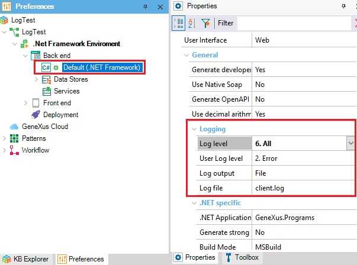

This document explains how to enable logging for Workflow Tables impact, reorganizations, and access to GXflow database information when using the GeneXus IDE.
Sometimes when you need to reorganize Workflow Tables or make an impact analysis, or when a Workflow process isn't working correctly, an error occurs showing no specific details. This may happen when a new Upgrade of GeneXus is installed. In this case, it is useful to enable logging and look for errors in the .log file created, as shown below:
It only implies enabling the Generator's logging. The logging properties can be found under Preferences by clicking on the corresponding Generator node.
For example, for a .NET Framework environment:

The properties to be set for all the Generators are as follows:
To apply changes made by these properties, Build any object.
After setting the properties, execute the reorganization or impact analysis, and the log will be created. The actions that you do in GXflow Client will be registered in this log.
If the path is not defined, the log will be created by default in the following files according to your generator:
If the log is working correctly, it should have a line similar to this one when you are signing in GXflow:
2022-06-15 10:41:49,002 34 DEBUG GeneXus.Data.ADO.GxCommand - ExecuteReader: Parameters @AV40WFUsrCod='WFADMINISTRATOR'
Note: If you are generating with .Net or Java, another client.log will be created in <kb_path>\Model\web\bin and <kb_path>\Model\web\logs, respectively. It will only have information about the creation or reorganization of the database when you do a Build/Rebuild.
HowTo: Enable Log for GXflow BPDeployer
HowTo: Generate log for GXflow license manager
| Backlinks | |
| Toc:GeneXus BPM Suite | HowTo: Enable Log for GXflow BPDeployer |